Забележителности:
Лондон, Англия
1 Уестминстърския дворец и Кулата на Елизабет (Биг Бен)
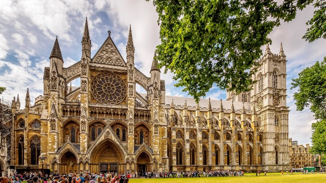
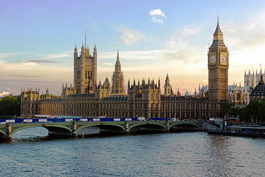
2 Лондонското око
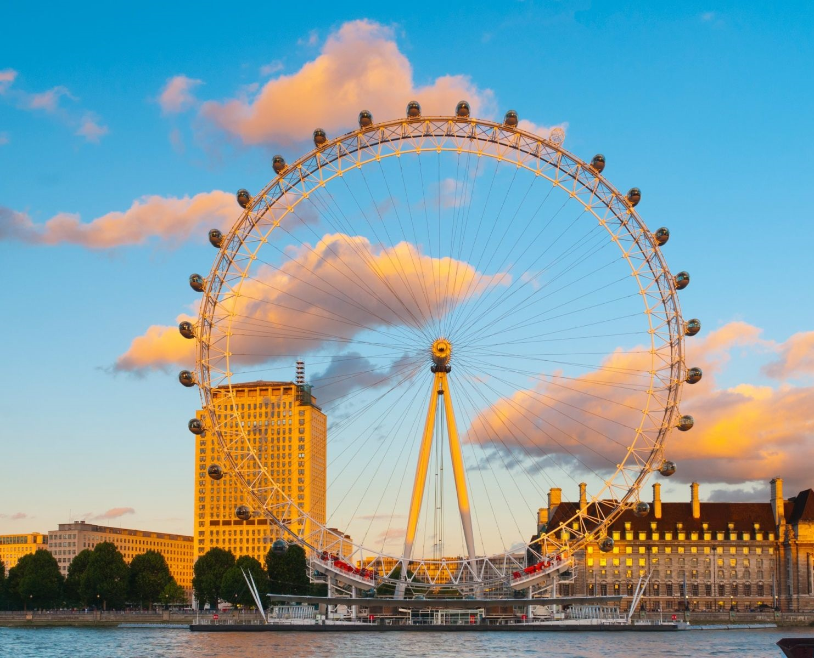
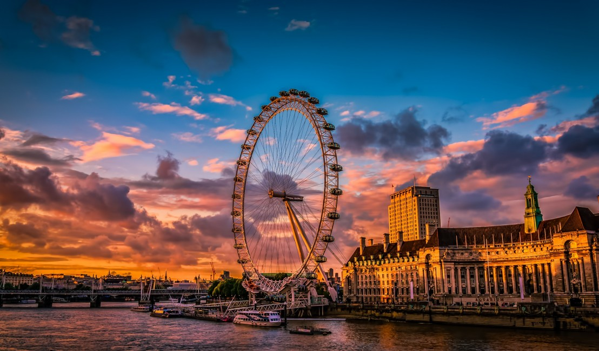
3 Бъкингамския дворец


4 Тауър бридж


5 Катедралата “Св. Павел“
 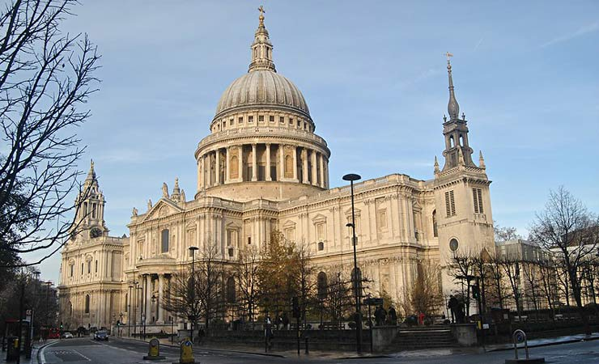
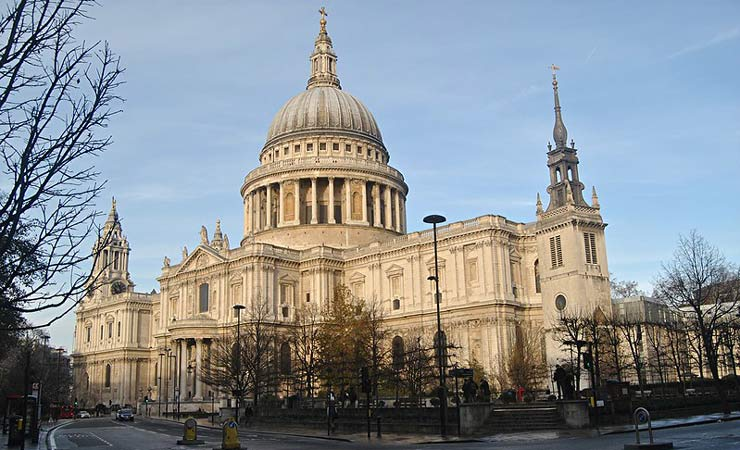
Париж, Франция
1 Айфеловата кула
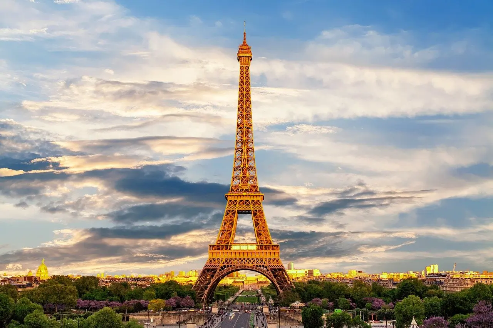

2 Лувърът
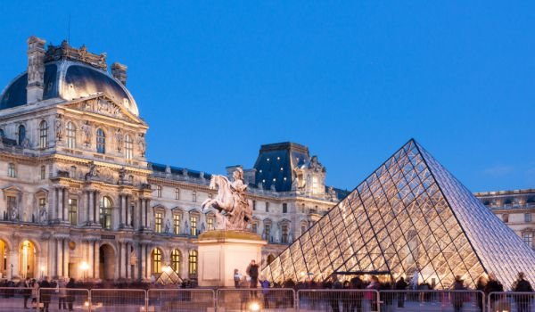
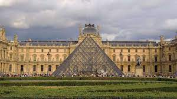
3 Катедралата „Нотр-Дам де Пари“
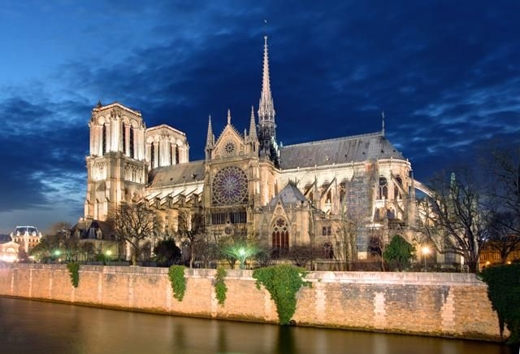

4 Булевард „Шанз-Елизе“


5 Триумфалната Арка


Ню Йорк, САЩ
1 Статуя на свободата
 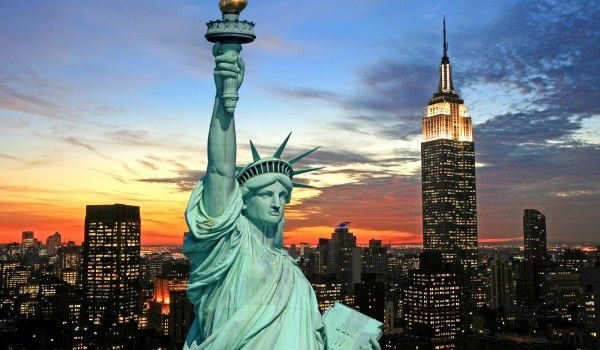
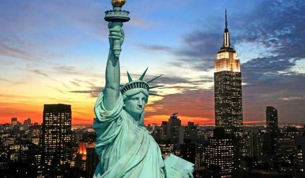
2 Централен парк
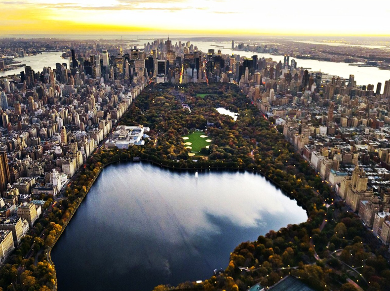

3 Бродуей и театралния квартал
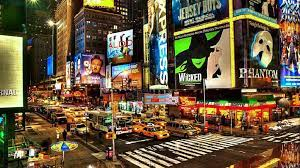

4 Метрополитен музей на изкуството
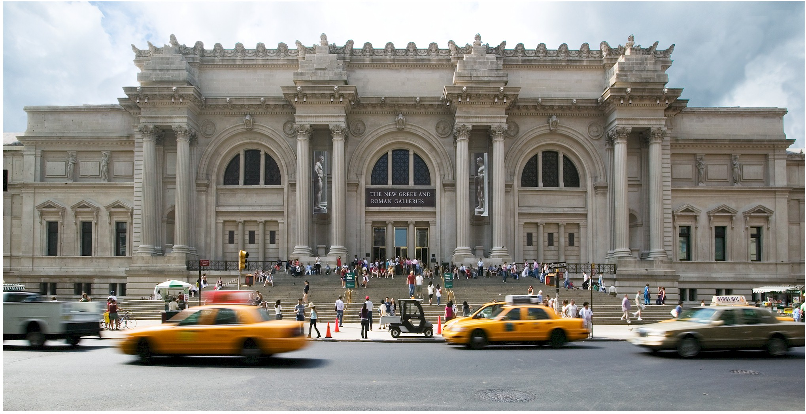
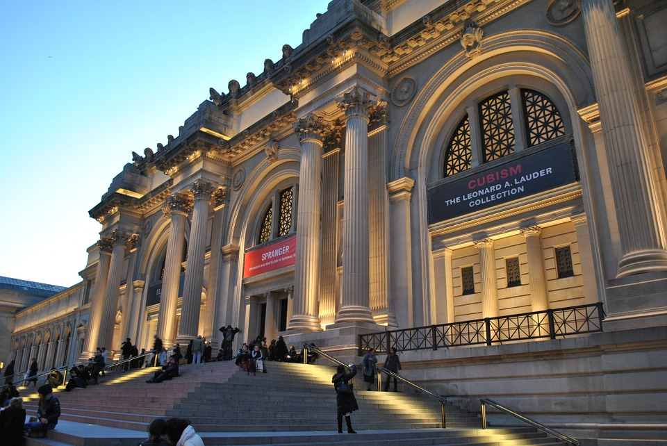
5 Емпайър Стейт Билдинг


Москва, Русия
1 Кремъл
2 Катедралата „Василий Блажени”
3 Оръжейната палата
4 Коломенское и Двореца на Алексей Романов
5 Червеният площад
Дубай, ОАЕ
1 Бурж Халифа
2 Старите арабски пазари в Дейра
3 Най-стария квартал Al Fahidi
4 Бурж Ал Араб
5 Пеещите фонтани на Дубай
Токио, Япония
1 Императорският дворец
2 Област Гинза: Магазинът ти, докато се качиш
3 Асакуса и храма Сенцо-джи
4 Национален природонаучен музей
5 Уено парк и зоопарк
Сингапур
1 Марина Бей
2 Колелото на Сингапур
3 Китайския квартал и Храмът със зъб на Буда
4 Кларк Кей
5 Сентоса
Лос Анджелис, САЩ
1 Буквите Hollywood
2 Алеята на славата
3 Кей Санта Моника
4 Венис Бийч
5 Грифит Парк
Барселона, Испания
1 Тибидабо и църквата Temple Expiatori del Sagrat Cor
2 Sagrada Familia
3 Casa Mila-La Pedrera
4 Парк Гюел
5 Casa Batllo
Мадрид, Испания
1 Пласа Майор
2 Кралският дворец
3 Храмът на Дебод
4 Катедрала Алмудена
5 Парк дел Ретиро